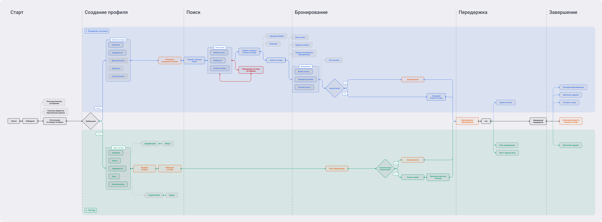

PetSee
Маркетплейс для временной передержки домашних животных. Соединяет владельцев питомцев с людьми, которые готовы за ними присмотреть. Проектировал с нуля — от исследования до финального UI.
Смотреть прототип в Figma →Обзор
Что за продукт, какую проблему решает и с какими ограничениями работал.
Открыть обзор →Аудитория
Владельцы
22–35 лет. Используют сервис 1–2 раза в год — командировки, отпуска. Хотят домашнюю атмосферу для питомца, а не клетку в зоогостинице.
Главный страхДоверить близкое существо незнакомцу и не знать, что происходит.
Ситтеры
22–32 года. Студенты, фрилансеры, те кто снимает квартиру. Хотят быть рядом с животными и зарабатывать, но нужны защита платформы и поток заказов.
Главный барьерЮридическая незащищённость и страх «остаться один на один с проблемой».
Метрики MVP
| Метрика | Цель | Почему |
|---|---|---|
| Конверсия из поиска в бронирование | 4–5% | Пользователи PetSee мотивированы — питомца некуда деть |
| Время до первого отклика | ≤ 30 мин | 67% владельцев уходят после 30 минут ожидания |
| Повторные бронирования за 60 дней | 15–20% | Доверие формируется после первого успешного опыта |
| Доля завершённых профилей питомца | 30–40% | Полнота данных снижает конфликты ситтеров с владельцами |
| Доля отменённых бронирований | < 30% | Барьерная метрика — прозрачные условия снижают мотивацию к отмене |
| CSAT | 60–65% | Консервативная цель для MVP — первый опыт всегда сложнее |
Исследование
20 глубинных интервью и два раунда опросов — 219 человек суммарно. Смотрел на страхи владельцев и барьеры ситтеров.
Открыть исследование →Бенчмаркинг
Разобрал пять продуктов: Airbnb, Dogsy, Rover, TrustedHousesitters и Telegram. Смотрел на механики доверия, логику поиска и работу с тревогой владельца.
Открыть бенчмаркинг →User Flow
Два параллельных потока — владелец и ситтер. Один вход, разные роли, одна точка встречи — момент активной передержки.

Открыть User Flow →How Might We
Переводил инсайты из исследования в вопросы формата HMW. Каждый привязан к конкретному инсайту и ведёт к конкретному решению.
Открыть HMW →Дизайн-решения
Верификация ситтеров, фото питомцев, live-отчёты во время передержки. Поиск и бронирование — за несколько шагов.
Lo-fi → Hi-fi
Три итерации — от чёрно-белых вайрфреймов до кликабельного прототипа в Figma. Последнюю версию тестировал с реальными пользователями.
Юзабилити-тесты
Провёл 6 сессий — трое владельцев, трое ситтеров. SUS 71.7, нашёл 5 проблем: три критических, две незначительные.
Открыть тесты →HMW после тестов
Каждую проблему из тестов переформулировал в HMW-вопрос и нашёл решение с метрикой. Один пример — ниже.
Высокий Стрелка «‹» воспринималась как «пропустить» — 3/3 владельцев бросили заполнение профиля питомца
Как показать, что данные питомца можно добавить позже — и не терять бронирование?


Метрика: доля завершённых бронирований ≥ 70%
Приоритизация MVP
Расставил фичи по четырём фазам — от обязательных механик доверия до backlog. Каждая фича привязана к данным из исследования.
Открыть приоритизацию →План измерений
Шесть метрик с целевыми значениями. Каждая привязана к конкретному вопросу о состоянии продукта.
Открыть план измерений →